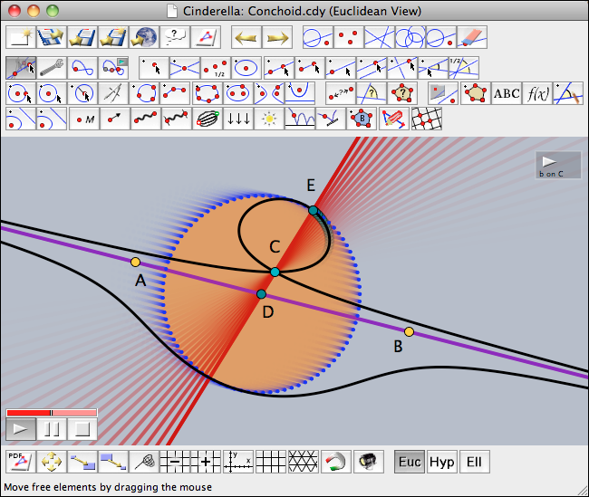

Introduction
What Is Cinderella?
Why did we write
Cinderella? Aren't there enough programs that are suitable for doing mathematics, and in particular for producing mathematical graphics? Indeed, there are many programs, but
Cinderella is special in many respects.
 |
| A screenshot of Cinderella performing an animation |
We want to point out the major features of this software.
Cinderella ...
- ... is a mouse-driven interactive geometry program: With a few mouse clicks you can construct simple or complex geometric configurations. No programming or keyboard input is necessary. After you have completed a construction you can pick a base element with the mouse and drag it around, while the entire construction follows your moves consistently. This enables you to explore the dynamic behavior of a drawing.
- ... has built-in automatic proving facilities: While you construct your configuration Cinderella reports any nontrivial facts that occur.
- ... allows simultaneous manipulation and construction in different views: You can view and manipulate the same configuration in the usual Euclidean plane, on a sphere, and even in Poincaré's hyperbolic disk.
- ... has "native support" for non-Euclidean geometries: In Cinderella you can easily switch between Euclidean, hyperbolic, and elliptic geometry. Depending on the context, your actions are always interpreted correctly.
- ... has advanced facilities for geometric loci: The unique mathematical methods of Cinderella guarantee that complete real branches of the loci and not only parts of them are drawn.
- ... is "Internet-aware": The entire program is written in Java. Each construction can be exported immediately to an interactive web page. Even student exercises and animations can be created in this way.
- ... produces high-quality printouts: You can generate camera-ready PostScript or PDF files of your drawings. This vector output is superior to screenshot pictures and uses the full resolution of the printer.
- ...is based on mathematical theory: The whole implementation has a mathematical foundation. The theories of the great geometers of the nineteenth century, as well as many new insights, make Cinderella a highly reliable and consistent tool for geometry.
In addition to this list (which was already present in the handbook of the first release), Cinderella.2 is a equipped with many new features that make Cinderella.2 much more than "just" a geometry program. For a detailed list of new features please refer to the section
What Is New in Cinderella.2. Here we will only give a brief overview of several aspects of the new release. So
Cinderella.2...
- ... comes with powerful modes for geometric transformations: You can construct several kinds of geometric transformations starting with simple translations or reflections up to projective or Möbius transformations. These transformation modes are extremely useful for simplifying constructions.
- ... allows the construction of fractals: Combining several transformations, it is possible in Cinderella.2 to construct so-called "iterated function systems." These are objects that are self-similar with respect to several transformations. These objects have fascinating geometric properties, and many well-known fractals are included in this class of objects.
- ... is freely programmable: One of the main new features in Cinderella.2 is the existence of a full-featured high-level programming language. The language CindyScript was designed to work seamlessly with interactive drawing environments. It is a functional language that allows powerful high-level programming. By adding only a few lines of code one can achieve significant control over the behavior of a construction.
- ... has built-in simulation facilities: Cinderella.2 comes with a special simulation engine CindyLab that can be used to construct physical simulations. CindyLab is based on a mass-particle/forces paradigm. One can simply draw an experiment and start the simulation. In particular, the combination of physics simulation with geometry or with the programming environment opens the possibility of surprising insights and amazing interactive simulations.
- ... supports audio output: Cinderella.2 has advanced functions for audio output. Via the build in MIDI interface of your computer it provides access to the generation of melodies and sound. By this one can on the one hand accompany mathematical demonstrations with sound effects. On the other hand one can experiment with the structure of sound itself on a very fundamental level.
- ... provides advanced formula rendering: Cinderella.2 has a built-in formula renderer that supports the TeX formula description language. By this, complex mathematical formulas can be inserted in mathematical visualizations. Formulas may even change dynamically with the drawing.
- ... supports image rendering and transformations: As a new feature starting from Cinderella.2.6 we also support using pixel graphic images within CindyScript. Images may be transformed and deformed in various ways. It is also possible to create custom images with self created content.
- ... supports pen-driven devices: A special interface for recognition of hand-drawn sketches makes Cinderella usable with purely pen-driven devices (such as electronic whiteboards and Tablet PCs). A hand-drawn sketch will be automatically recognized and converted into an interactive construction.
Thus Cinderella.2 consists of three major program parts: the geometry program, the scripting language, and the simulation engine. The following chapters will highlight several aspects of these three parts of the program.